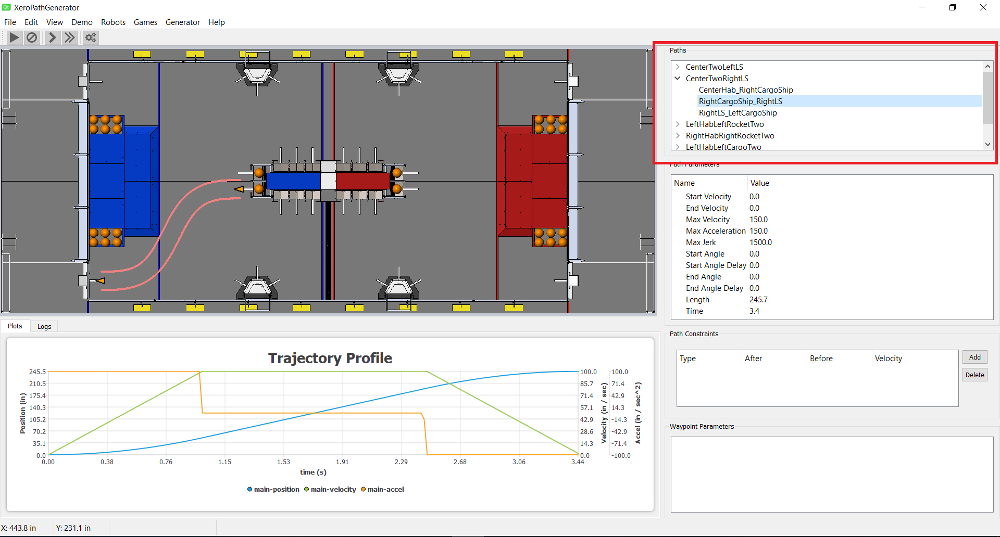

Path File Window

The path file window is in the upper right side of the application (highlighted here in red).
It is a twolevel display with the list of elements at the top level being the set of
Path Groups. The elements below Path Groups are the Paths. Selecting a specific Path
causes the path to be displayed in the Path View window and causes the Trajectory Profile
to be displayed in the Trajectory Profile window.